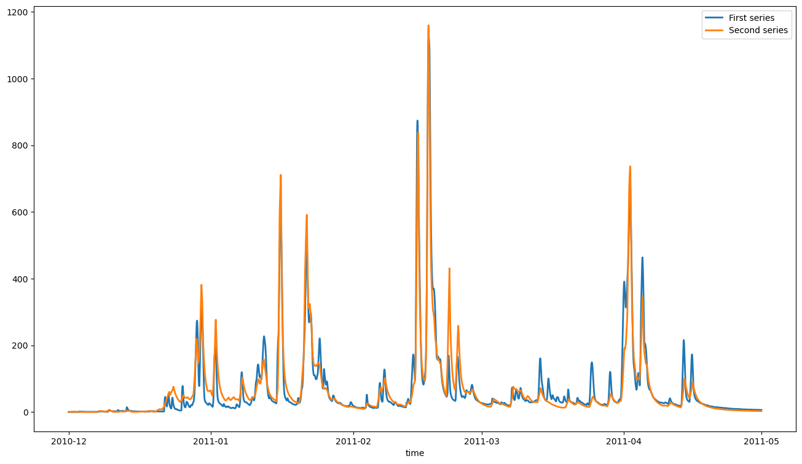
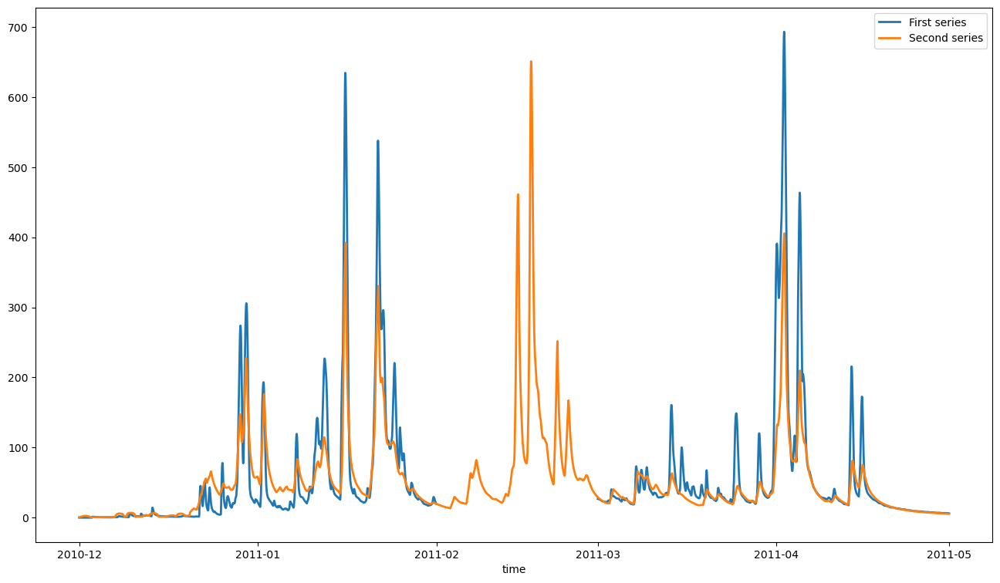
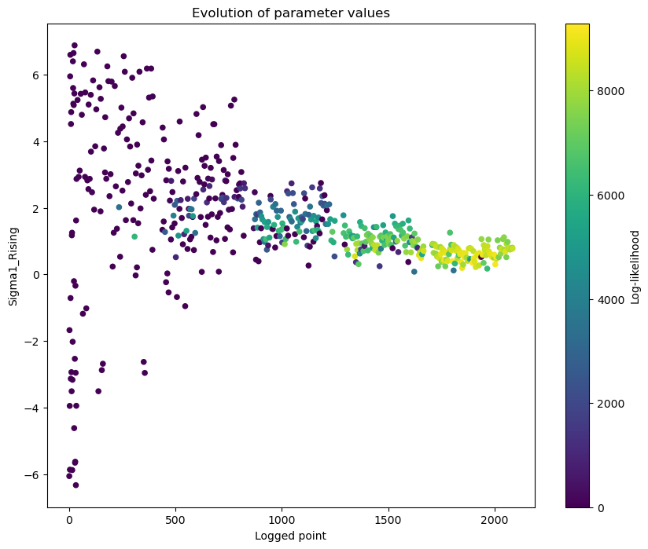
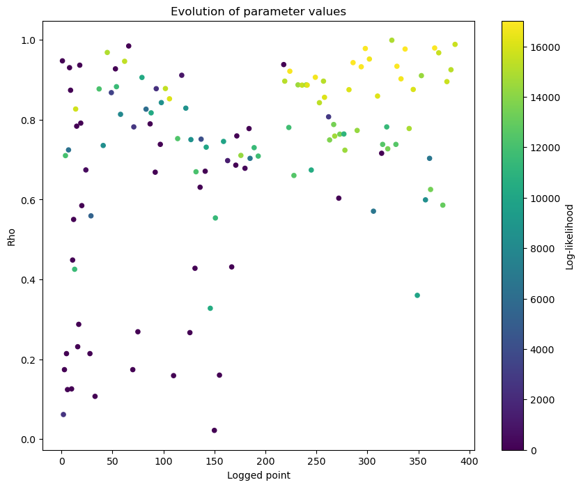
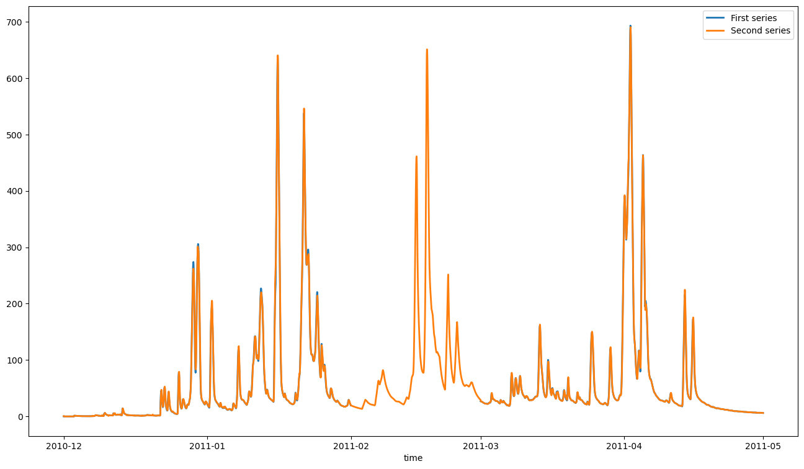
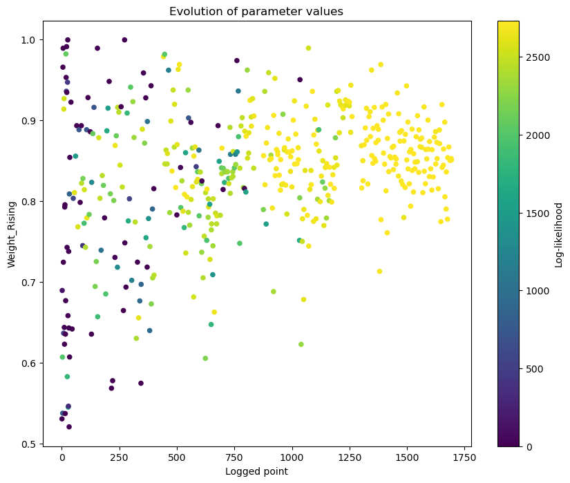
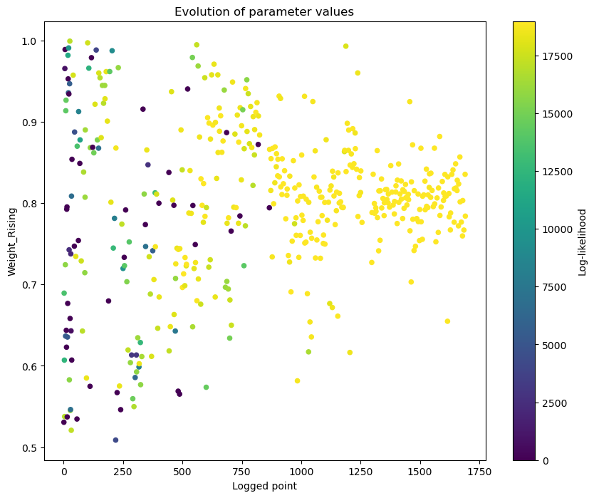

Error correction models - ERRIS¶
About this document¶
from swift2.doc_helper import pkg_versions_info
print(pkg_versions_info("This document was generated from a jupyter notebook"))
This document was generated from a jupyter notebook on 2025-03-27 17:23:08.069774
swift2 2.5.1
uchronia 2.6.2
Calibrating ERRIS¶
Model structure¶
We use sample hourly data from the Adelaide catchment this catchment in the Northern Territory, TBC. The catchment model set up is not the key point of this vignette so we do not comment on that section:
# Only temporary, under construction...
import swift2.wrap.swift_wrap_generated as swg
import xarray as xr
from cinterop.timeseries import (
TIME_DIMNAME,
pd_series_to_xr_series,
slice_xr_time_series,
xr_ts_end,
xr_ts_start,
)
from swift2.doc_helper import *
# from swift2.prototypes import extractOptimizationLog
from swift2.model_definitions import *
from swift2.parameteriser import *
from swift2.play_record import *
from swift2.simulation import *
from swift2.statistics import *
from swift2.system import *
from swift2.utils import *
from swift2.vis import OptimisationPlots
from uchronia.time_series import get_item, mk_date
catchmentStructure = sample_catchment_model(site_id= "Adelaide", config_id="catchment")
hydromodel = "GR4J";
channel_routing = 'MuskingumNonLinear';
hydroModelRainfallId = 'P'
hydroModelEvapId = 'E'
from swift2.classes import HypercubeParameteriser, Parameteriser, Simulation
# set models
insimulation = swap_model(catchmentStructure, model_id= hydromodel ,what = "runoff")
simulation:Simulation = swap_model(insimulation, model_id = channel_routing ,what = "channel_routing")
saId = get_subarea_ids(simulation)
saId = saId[0] # HACK: need to test robustness to different time series passed to player functions
precipTs = sample_series(site_id = "Adelaide", var_name= "rain")
evapTs = sample_series(site_id = "Adelaide", var_name = "evap")
flowRateTs = sample_series(site_id = "Adelaide", var_name = "flow")
play_input(simulation, precipTs, mk_full_data_id('subarea', saId, hydroModelRainfallId))
play_input(simulation, evapTs, mk_full_data_id('subarea', saId, hydroModelEvapId))
configure_hourly_gr4j(simulation)
set_simulation_time_step(simulation, 'hourly')
# Small time interval only, to reduce runtimes in this vignette
simstart = mk_date(2010,12,1)
simend = mk_date(2011,6,30,23)
simwarmup = simstart
set_simulation_span(simulation, simstart, simend)
2007-01-01 00:00:00 NaN
2007-01-01 01:00:00 NaN
2007-01-01 02:00:00 NaN
2007-01-01 03:00:00 NaN
2007-01-01 04:00:00 NaN
...
2014-12-04 17:00:00 0.435
2014-12-04 18:00:00 0.424
2014-12-04 19:00:00 0.414
2014-12-04 20:00:00 0.405
2014-12-04 21:00:00 0.397
Length: 69478, dtype: float64
{'subarea.1.areaKm2': 638.0}
{'subarea.1.areaKm2': 638.0}
def templateHydroParameterizer(simulation):
return define_parameteriser_gr4j_muskingum(ref_area=250.0,
time_span=3600,
simulation=simulation,
objfun="NSE",
delta_t=1.0,
param_name_k='Alpha')
nodeId = 'node.2'
flowId = mk_full_data_id(nodeId, 'OutflowRate')
record_state(simulation, flowId)
We use pre-calibrated hydrologic parameters (reproducible with doc/error_correction_doc_preparation.r in this package structure)
p = templateHydroParameterizer(simulation)
set_min_parameter_value(p, 'R0', 0.0)
set_max_parameter_value(p, 'R0', 1.0)
set_min_parameter_value(p, 'S0', 0.0)
set_max_parameter_value(p, 'S0', 1.0)
set_parameter_value( p, 'log_x4', 1.017730e+00)
set_parameter_value( p, 'log_x1', 2.071974e+00 )
set_parameter_value( p, 'log_x3', 1.797909e+00 )
set_parameter_value( p, 'asinh_x2', -1.653842e+00)
set_parameter_value( p, 'R0', 2.201930e-11 )
set_parameter_value( p, 'S0', 3.104968e-11 )
set_parameter_value( p, 'X', 6.595537e-03 ) # Gotcha: needs to be set before alpha is changed.
set_parameter_value( p, 'Alpha', 6.670534e-01 )
p.as_dataframe()
sViz = mk_date(2010,12,1)
eViz = mk_date(2011,4,30,23)
def one_wet_season(tts):
from cinterop.timeseries import ts_window
return ts_window(tts, from_date=sViz, to_date=eViz)
def plot_obs_vs_calc(obs, calc, ylab="flow (m3/s)"):
from swift2.vis import plot_two_series
obs = as_xarray_series(one_wet_season(obs))
calc = one_wet_season(calc)
plot_two_series(obs, calc, start_time= xr_ts_start(obs), end_time= xr_ts_end(obs))

2007-01-01 00:00:00 NaN
2007-01-01 01:00:00 NaN
2007-01-01 02:00:00 NaN
2007-01-01 03:00:00 NaN
2007-01-01 04:00:00 NaN
...
2014-12-04 17:00:00 0.435
2014-12-04 18:00:00 0.424
2014-12-04 19:00:00 0.414
2014-12-04 20:00:00 0.405
2014-12-04 21:00:00 0.397
Length: 69478, dtype: float64
Set up the error correction model¶
(['2', '1'], ['Outlet', 'Node_1'])
errorModelElementId = 'node.2';
simulation.set_error_correction_model('ERRIS', errorModelElementId, length=-1, seed=0)
flowRateTsGapped = flowRateTs
flowRateTsGapped['2011-02'] = np.nan
# plot(flowRateTsGapped)
play_input(simulation,flowRateTsGapped,var_ids=mk_full_data_id(errorModelElementId,"ec","Observation"))
Now, prepare a model with error correction, and set up for generation
from swift2.prototypes import *
ecs = simulation.clone()
ecs.set_state_value(mk_full_data_id(nodeId,"ec","Generating"),False)
updatedFlowVarID = mk_full_data_id(nodeId,"ec","Updated")
inputFlowVarID = mk_full_data_id(nodeId,"ec","Input")
ecs.record_state(var_ids=c(updatedFlowVarID, inputFlowVarID))
ERRIS calibration in stages¶
#termination = getMaxRuntimeTermination(0.005)
termination = create_sce_termination_wila('relative standard deviation', c('0.05','0.0167'))
We could set up a four-stages estimation in one go, but we will instead work in each stages for didactic purposes.
%%time
censOpt = 0.0
estimator = create_erris_parameter_estimator (simulation, flowRateTs, errorModelElementId,
estimation_start = simstart, estimation_end=simend, cens_thr=0.0, cens_opt=censOpt,
termination_condition=termination, restriction_on=True, weighted_least_square=False)
stageOnePset = swg.CalibrateERRISStageOne_py(estimator)
print(stageOnePset.as_dataframe())
Name Value Min Max
0 Epsilon -7.972797 -20.0 0.0
1 Lambda -0.935233 -30.0 5.0
2 D 0.000000 0.0 0.0
3 Mu 0.000000 0.0 0.0
4 Rho 0.000000 0.0 0.0
5 Sigma1_Falling 0.000000 0.0 0.0
6 Sigma1_Rising 0.000000 0.0 0.0
7 Sigma2_Falling 0.000000 0.0 0.0
8 Sigma2_Rising 0.000000 0.0 0.0
9 Weight_Falling 1.000000 1.0 1.0
10 Weight_Rising 1.000000 1.0 1.0
11 CensThr 0.000000 0.0 0.0
12 CensOpt 0.000000 0.0 0.0
13 MaxObs 1126.300000 1126.3 1126.3
CPU times: user 3.11 s, sys: 15.9 ms, total: 3.12 s
Wall time: 3.12 s
Stage 2¶
Stage two can be logged:
%%time
swg.SetERRISVerboseCalibration_py(estimator, True)
stageTwoPset = swg.CalibrateERRISStageTwo_py(estimator, stageOnePset)
print(stageTwoPset.as_dataframe())
Name Value Min Max
0 D 0.747785 0.000000 2.000000
1 Mu -1.648841 -100.000000 100.000000
2 Sigma1_Rising 0.349269 -6.907755 6.907755
3 CensOpt 0.000000 0.000000 0.000000
4 CensThr 0.000000 0.000000 0.000000
5 Epsilon -7.972797 -7.972797 -7.972797
6 Lambda -0.935233 -0.935233 -0.935233
7 MaxObs 1126.300000 1126.300000 1126.300000
8 Rho 0.000000 0.000000 0.000000
9 Sigma1_Falling 0.000000 0.000000 0.000000
10 Sigma2_Falling 0.000000 0.000000 0.000000
11 Sigma2_Rising 0.000000 0.000000 0.000000
12 Weight_Falling 1.000000 1.000000 1.000000
13 Weight_Rising 1.000000 1.000000 1.000000
CPU times: user 8.84 s, sys: 7.6 ms, total: 8.84 s
Wall time: 8.85 s
def mkEcIds(p:HypercubeParameteriser) -> HypercubeParameteriser:
df = p.as_dataframe()
df.Name = mk_full_data_id(nodeId, 'ec', df.Name)
return create_parameteriser('Generic',df)
mkEcIds(stageTwoPset).apply_sys_config(ecs)
ecs.exec_simulation()
plot_obs_vs_calc(flowRateTsGapped, ecs.get_recorded(updatedFlowVarID))

A helper function to process the calibration log:
# def prepOptimLog(estimator, fitness_name = "Log.likelihood"):
# optimLog = getLoggerContent(estimator)
# # head(optimLog)
# # optimLog$PointNumber = 1:nrow(optimLog)
# logMh = mkOptimLog(optimLog, fitness = fitness_name, messages = "Message", categories = "Category")
# geom_ops = mhplot::subset_by_message(logMh)
# d = list(data=logMh, geom_ops=geom_ops)
# }
(swift2.classes.ErrisStagedCalibration,
'CFFI pointer handle to a native pointer of type id "ERRIS_STAGED_CALIBRATION_PTR"')
v = OptimisationPlots(geom_ops)
g = v.parameter_evolution('Sigma1_Rising', c(0, get_max_ll()))
plt.gcf().set_size_inches(10,8)

Stage 3¶
%%time
stageThreePset = swg.CalibrateERRISStageThree_py(estimator, stageTwoPset)
print(stageThreePset.as_dataframe())
Name Value Min Max
0 Rho 0.977261 0.000000 1.000000
1 Sigma1_Rising -1.613140 -6.907755 6.907755
2 CensOpt 0.000000 0.000000 0.000000
3 CensThr 0.000000 0.000000 0.000000
4 D 0.747785 0.747785 0.747785
5 Epsilon -7.972797 -7.972797 -7.972797
6 Lambda -0.935233 -0.935233 -0.935233
7 MaxObs 1126.300000 1126.300000 1126.300000
8 Mu -1.648841 -1.648841 -1.648841
9 Sigma1_Falling 0.000000 0.000000 0.000000
10 Sigma2_Falling 0.000000 0.000000 0.000000
11 Sigma2_Rising 0.000000 0.000000 0.000000
12 Weight_Falling 1.000000 1.000000 1.000000
13 Weight_Rising 1.000000 1.000000 1.000000
CPU times: user 2.13 s, sys: 0 ns, total: 2.13 s
Wall time: 2.13 s
v = OptimisationPlots(geom_ops)
g = v.parameter_evolution('Rho', c(0, get_max_ll()))
plt.gcf().set_size_inches(10,8)

Stage 3a, generating and fitting M and S if free¶
%%time
stageThreePsetMS = swg.CalibrateERRISStageThreeMS_py(estimator, stageThreePset)
print(stageThreePsetMS.as_dataframe())
Name Value Min Max
0 Rho 0.977261 0.000000 1.000000
1 Sigma1_Rising -1.613140 -6.907755 6.907755
2 CensOpt 0.000000 0.000000 0.000000
3 CensThr 0.000000 0.000000 0.000000
4 D 0.747785 0.747785 0.747785
5 Epsilon -7.972797 -7.972797 -7.972797
6 Lambda -0.935233 -0.935233 -0.935233
7 MaxObs 1126.300000 1126.300000 1126.300000
8 Mu -1.648841 -1.648841 -1.648841
9 Sigma1_Falling 0.000000 0.000000 0.000000
10 Sigma2_Falling 0.000000 0.000000 0.000000
11 Sigma2_Rising 0.000000 0.000000 0.000000
12 Weight_Falling 1.000000 1.000000 1.000000
13 Weight_Rising 1.000000 1.000000 1.000000
14 MNoise -0.802462 -100.000000 100.000000
15 SNoise 1.948928 -10.000000 10.000000
CPU times: user 544 ms, sys: 0 ns, total: 544 ms
Wall time: 543 ms
mkEcIds(stageThreePsetMS).apply_sys_config(ecs)
ecs.exec_simulation()
plot_obs_vs_calc(flowRateTsGapped, ecs.get_recorded(updatedFlowVarID))

Stage 4, rising limb¶
%%time
stageFourPsetRising = swg.CalibrateERRISStageFour_py(estimator, stageThreePsetMS, useRising = True)
print(stageFourPsetRising.as_dataframe())
Name Value Min Max
0 Sigma1_Rising -1.725378 -6.907755 6.907755
1 Sigma2_Rising 0.086763 -6.907755 6.907755
2 Weight_Rising 0.853421 0.500000 1.000000
3 CensOpt 0.000000 0.000000 0.000000
4 CensThr 0.000000 0.000000 0.000000
5 D 0.747785 0.747785 0.747785
6 Epsilon -7.972797 -7.972797 -7.972797
7 Lambda -0.935233 -0.935233 -0.935233
8 MaxObs 1126.300000 1126.300000 1126.300000
9 Mu -1.648841 -1.648841 -1.648841
10 Rho 0.977261 0.977261 0.977261
11 Sigma1_Falling 0.000000 0.000000 0.000000
12 Sigma2_Falling 0.000000 0.000000 0.000000
13 Weight_Falling 1.000000 1.000000 1.000000
CPU times: user 2.44 s, sys: 0 ns, total: 2.44 s
Wall time: 2.44 s
v = OptimisationPlots(geom_ops)
g = v.parameter_evolution('Weight_Rising', c(0, get_max_ll()))
plt.gcf().set_size_inches(10,8)

mkEcIds(stageFourPsetRising).apply_sys_config(ecs)
ecs.exec_simulation()
plot_obs_vs_calc(flowRateTsGapped, ecs.get_recorded(updatedFlowVarID))
Stage 4, falling limbs¶
%%time
stageFourPsetFalling = swg.CalibrateERRISStageFour_py(estimator, stageThreePsetMS, useRising = False)
print(stageFourPsetFalling.as_dataframe())
Name Value Min Max
0 Sigma1_Rising -3.675723 -6.907755 6.907755
1 Sigma2_Rising -1.198708 -6.907755 6.907755
2 Weight_Rising 0.794993 0.500000 1.000000
3 CensOpt 0.000000 0.000000 0.000000
4 CensThr 0.000000 0.000000 0.000000
5 D 0.747785 0.747785 0.747785
6 Epsilon -7.972797 -7.972797 -7.972797
7 Lambda -0.935233 -0.935233 -0.935233
8 MaxObs 1126.300000 1126.300000 1126.300000
9 Mu -1.648841 -1.648841 -1.648841
10 Rho 0.977261 0.977261 0.977261
11 Sigma1_Falling 0.000000 0.000000 0.000000
12 Sigma2_Falling 0.000000 0.000000 0.000000
13 Weight_Falling 1.000000 1.000000 1.000000
CPU times: user 28.7 s, sys: 0 ns, total: 28.7 s
Wall time: 28.7 s
v = OptimisationPlots(geom_ops)
g = v.parameter_evolution('Weight_Rising', c(0, get_max_ll()))
plt.gcf().set_size_inches(10,8)

Final consolidated parameter set¶
finalPset = swg.ConcatenateERRISStagesParameters_py(estimator, hydroParams = create_parameteriser(), stage1_result = stageOnePset, stage2_result = stageTwoPset,
stage3_result = stageThreePsetMS, stage4a_result = stageFourPsetRising, stage4b_result = stageFourPsetFalling, toLongParameterName = False)
print(finalPset.as_dataframe())
Name Value Min Max
0 CensThr 0.000000 0.000000 0.000000
1 CensOpt 0.000000 0.000000 0.000000
2 MNoise -0.802462 -100.000000 100.000000
3 SNoise 1.948928 -10.000000 10.000000
4 Lambda -0.935233 -0.935233 -0.935233
5 Epsilon -7.972797 -7.972797 -7.972797
6 Mu -1.648841 -1.648841 -1.648841
7 D 0.747785 0.747785 0.747785
8 Rho 0.977261 0.977261 0.977261
9 MaxObs 1126.300000 1126.300000 1126.300000
10 Sigma1_Rising -1.725378 -6.907755 6.907755
11 Sigma2_Rising 0.086763 -6.907755 6.907755
12 Weight_Rising 0.853421 0.500000 1.000000
13 Sigma1_Falling -3.675723 -6.907755 6.907755
14 Sigma2_Falling -1.198708 -6.907755 6.907755
15 Weight_Falling 0.794993 0.500000 1.000000
Legacy call¶
Check that the previous "one stop shop" call gives the same results.
%%time
censOpt = 0.0
termination = create_sce_termination_wila('relative standard deviation', c('0.05','0.0167'))
dummyDate = simstart
from swift2.prototypes import estimate_erris_parameters
psetFullEstimate = estimate_erris_parameters(simulation, flowRateTs, errorModelElementId,
warmup_start=dummyDate, warmup_end=dummyDate, warmup=False, estimation_start = simstart, estimation_end=simend, cens_thr=0.0,
cens_opt = censOpt, exclusion_start=dummyDate, exclusion_end=dummyDate, exclusion=False, termination_condition = termination,
hydro_params = None, erris_params = None, restriction_on = True,
weighted_least_square = False)
print(psetFullEstimate.as_dataframe())
Name Value Min Max
0 node.2.ec.CensThr 0.000000 0.000000 0.000000
1 node.2.ec.CensOpt 0.000000 0.000000 0.000000
2 node.2.ec.MNoise -0.802462 -100.000000 100.000000
3 node.2.ec.SNoise 1.948928 -10.000000 10.000000
4 node.2.ec.Lambda -0.935233 -0.935233 -0.935233
5 node.2.ec.Epsilon -7.972797 -7.972797 -7.972797
6 node.2.ec.Mu -1.648841 -1.648841 -1.648841
7 node.2.ec.D 0.747785 0.747785 0.747785
8 node.2.ec.Rho 0.977261 0.977261 0.977261
9 node.2.ec.MaxObs 1126.300000 1126.300000 1126.300000
10 node.2.ec.Sigma1_Rising -1.725378 -6.907755 6.907755
11 node.2.ec.Sigma2_Rising 0.086763 -6.907755 6.907755
12 node.2.ec.Weight_Rising 0.853421 0.500000 1.000000
13 node.2.ec.Sigma1_Falling -3.675723 -6.907755 6.907755
14 node.2.ec.Sigma2_Falling -1.198708 -6.907755 6.907755
15 node.2.ec.Weight_Falling 0.794993 0.500000 1.000000
CPU times: user 45.7 s, sys: 3.85 ms, total: 45.7 s
Wall time: 45.8 s